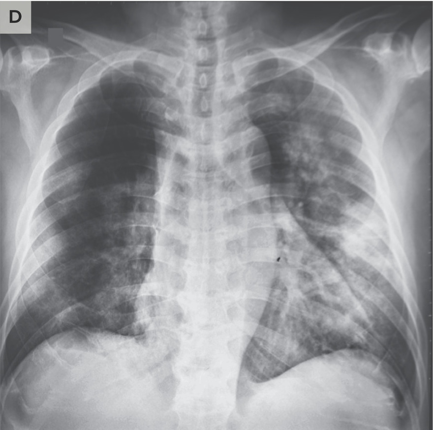
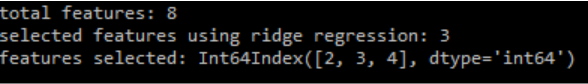

COVID-19 has been the most pressing issue in current times across the globe. Due to the massive impact COVID-19 has had on our lives and the risk it poses to our health, medical professionals have worked tirelessly to obtain more information on the virus to make the world safer (Pascarella, 2020). We wish to contribute to this noble effort through our project.
Because COVID-19 has varying symptoms and requires significant time from medical professionals to diagnose, we hope to enhance the accuracy and efficiency of COVID-19 diagnosis and reduce the time and error involved in diagnosing the virus. By developing two diagnostic models, trained on distinct datasets, this project hopes to evaluate the accuracy of machine learning-based diagnosis and further understanding the relative importance of various types of diagnostic data.
[Data Transforms for CNN]
We used the COVID Chest X-ray Dataset linked at the end of this report to train a Convolutional Neural Network (CNN). This dataset was convenient because it is organized in a GitHub and is free to download. The dataset contains images of X-rays from people with COVID-19, people with a different respiratory illness, and people who are healthy. An example of each type of image is shown below:


Another benefit of this dataset is that it is supported by the Python library “torchxrayvision”. “torchxrayvision” is a Python library that supports many different X-ray datasets and provides a data loader that works with Pytorch. Unfortunately, the X-ray images contained in this dataset are not of uniform size and shape. The input images for our CNN must all be the same size because our CNN incorporates fully connected layers that require fixed sized inputs. To solve this problem we transformed each image. Each image was resized to 224x224 pixels and had a center crop applied to it if it was not already square. Applying these image transforms to all of our data guaranteed that every image fed into our network was of valid size.
[Data Cleaning]
A CSV file containing categorical symptoms (cough, fever, sore throat, shortness of breath, and headache), age, gender, and exposure data was found online. This dataset had three primary issues: categorical values were listed as strings instead of numbers, inconclusive COVID test results were listed, and many data points had one or more missing values for particular features. First, any data points indicating an inconclusive result were removed. Text values were then replaced by integer values by mapping values through a dictionary. Next, missing values were imputed by K-Nearest Neighbors. The value of a missing feature was imputed using the most common value of the 5 nearest neighbors.
[Logistic Regression with PCA]
We ran Logistic regression with PCA on our corona_data.csv. This dataset uses binary labels. A label of 0 corresponds to a negative coronavirus test result and 1 corresponds to a positive coronavirus test result. There are 8 features in this dataset. Seven of the features are binary features and represent gender, cough, fever, sore throat, shortness of breath, headache, and whether a patient’s age is above or below 60. All six features only take on two values 0 for false, and 1 for true. A 0 for the gender feature represents male and a 1 represents female. The final feature is the reason that the individual is being tested. This feature can take any one of three values. A 2 for this feature means the individual traveled abroad, a 1 means that this person had confirmed contact with an infected individual and a 0 means their reason for testing was other. More details in the result section.

[CNN Methods]
We implemented a CNN using Pytorch to be trained on a dataset containing images of chest X-rays as explained above in the Data Collection section. Our CNN contains several convolutional blocks that we train to extract features from our images. Inside of each convolutional block we have a convolution layer, a pooling layer, a ReLU nonlinearity and a batch normalization layer. After all of the convolutional blocks, we have a linear layer that produces the output of our network. Our CNN has only two outputs as we are training it to recognize two classes: COVID positive and COVID negative. Healthy individuals and individuals suffering from diseases other than COVID-19 all fall into the COVID negative class. When training our model we chose an 80/20 split for our data between training and testing and a batch size of 4. We use cross entropy loss as our network’s loss function. The cross entropy loss function implemented within Pytorch handles the softmax operation so that we can feed in our raw network output and class labels when calculating loss. During training, the optimizer that we use is stochastic gradient descent. We have landed on a learning rate of 0.003 and a momentum of 0.99. The training of our network was performed on a GPU instance of Google Colab. Utilizing a GPU instance and working with CUDA provided a large speed up to training.
[Logistic Regression with PCA]
We ran Logistic regression with PCA on our corona_data.csv. The data used here is described in the earlier Data Collection section. Since the dataset labels are discrete (only 0 and 1), we chose to use classification, and logistic regression is a soft classification and it is easy to be implemented. To speed up the training process as the future data size will grow, we decided to use PCA before doing the logistic regression. Before running PCA we standardized the data since PCA yields a feature subspace that maximizes the variance along the axes.

Then we used PCA to reduce the data feature size from 8 to 6 while keeping 0.85 variance retained.
Then we trained on the updated feature-reduced data using logistic regression. To predict the new data(8 features), first, run the PCA fitted by training data to transform the data to 6-feature-space data then predict on our trained model to get the result.
[Lasso and Ridge Regression for Feature Selection Method]
We ran lasso and ridge regression for feature selection on our cleaned corona_data.csv file. We first scaled the data set using a Min Max scaler in order to make the data more easily processed by the algorithms. Next, we split the data into 20% testing data and 80% training data. After splitting our data we applied lasso regression for feature selection. After performing feature selection we trained on our data appropriately. Finally, we utilized a random forest classifier with 10,000 estimators and a random state of 0 to measure the accuracy of our data. After receiving the results for lasso regression, we also decided to run ridge regression on our cleaned corona_data.csv dataset. The data was scaled and split the same as it was for lasso regression. Then we applied ridge regression for feature selection and fit the data. Finally, we utilized another random forest classifier with the same parameters to measure the accuracy of our data.
[SVM Methods]
We implemented a SVM in Scikit Learn to train on categorical symptom data to predict positive or negative COVID results. Prior to training the SVM, the size of the dataset was reduced by randomly undersampling the majority class (COVID negative). This was done for two reasons. Due to the kernel chosen for the SVM, the fitting time scaled quadratically (or more) with the number of datapoints, so training on the entire dataset was impractical. In addition, undersampling the majority class helped reduce the imbalance in data, improving the performance of the SVM. Note that undersampling was done on only the training data; testing data was left unaltered to capture the model’s true performance on data.
Next, hyperparameters were tuned with 10 fold cross-validation. Hyperparameters tuned include: the ratio of negative test cases retained when undersampling data, the regularization constant, and gamma, and the kernel. For each set of hyperparameters, the confusion matrix and associated performance metrics of precision, recall, F1 score, and accuracy were calculated. The value that maximized the F1 score was chosen for each hyperparameter.
[KNN Methods]
We built a simple K-Nearest Neighbors model using Scikit Learn to classify the positive COVID-19 cases with two features (symptom score and contact status with others) from corona_data.csv after cleaning, which is described in the earlier section. Since there was a difficulty in building the model with little variations of the values in the data, the feature symptom score used to train this model was created by combining features in the original data.
For instance, the symptom score is a summation of all symptoms (cough, fever, sore_throat, shortness_of_breath, head_ache) for each patient where having a symptom counts 1 point for the symptom. Another feature for the data is the contact status of a patient with others, and the values for this feature were turned into digits from strings (Other -> 0, Contact with confirmed -> 1, Abroad -> 2) during data cleaning.
[CNN Results]

The figure shown above includes the loss and accuracy curves for our CNN trained over 100 epochs. While the validation accuracy and loss initially follow the training accuracy and loss, we see them begin to diverge around the 37th epoch. While this could be seen as evidence for over fitting, this does not seem to be the case. The model’s highest validation accuracy of ~76% was actually achieved during the 99th epoch. This shows that the model was still learning generalizable features deep into training. The model’s highest training accuracy was ~97%.
Another interesting feature of our results is that around the 37th epoch when training and validation accuracy and loss begin to diverge we see a steep drop in accuracy and a spike in loss for both training and validation. We are unsure of what exactly is causing this phenomenon but one hypothesis is that this is an example of “double descent” (Nakkiran, et al.). Double descent occurs when the effective model complexity (EMC) is approximately equal to the number of training examples. Increasing training time, increases EMC. This results in a loss curve which decreases at first, sharply increases as EMC approaches the number of training examples, and then decreases again as EMC increases beyond the number of training examples.
[Logistic Regression with PCA]
We compare the accuracy of running logistic regression with PCA and to the accuracy score for running logistic regression without PCA. The results are similar for both. This is a positive result as it shows that PCA does not negatively impact our accuracy while speeding up our training process.

From our accuracy results we conclude that logistic regression with PCA is a valid approach to predicting diagnosis with this time of binary feature data since the accuracy is about 95%.
[Lasso and Ridge Regression for Feature Selection Results]
All 8 features from our binary feature dataset(corona_data.csv) were selected using lasso regression meaning none of the features had coefficients that shrank to zero after applying the algorithm.

The accuracy result was higher after applying lasso regression than with logistic regression alone. However, the F1, precision, and recall scores were significantly lower, so our previous data is most likely more valuable.

Since lasso regression was ineffective in reducing the number of features for our data, we decided to also apply ridge regression to our dataset for feature selection. Only 3 features of our dataset were selected using ridge regression. The features that were selected were sore_throat, shortness_of_breath, and head_ache.
The accuracy is about the same as our logistic regression results, however, F1 score, precision score, and recall are all significantly lower so we believe our logistic regression using PCA for feature selection data to be more accurate.

[SVM Results]
The following figures show the result of cross-validation over four hyperparameters. The plots are shown in the order the hyperparameters were optimized.
The undersampling ratio is defined as the ratio of negative cases to positive cases left in the training data set after undersampling is performed. As shown above, accuracy is high at 96.4% when the undersampling ratio is 5. However, due to the unbalanced nature of the dataset, the recall and precision of the model is significantly lower. Therefore, the undersampling ratio of 5, which maximized the F1 score while maintaining a manageably small dataset, was chosen. This ratio was used for the remainder of the cross-validation.
The regularization strength of the model is inversely proportional to the plotted regularization strength. It appears that the performance of the model is mostly independent of the regularization and gamma hyperparameters of the SVM. The variation in F1 score is negligible across different values in the hyperparameters gamma and regularization strength. As such, the values of regularization and gamma were left at their default values as defined by Scikit learn.

Lastly, the type of kernel implemented by the SVM was tested. A radial basis function kernel presents the highest accuracy and F1 score of 96.4% and 67.7% respectively.
[KNN Results]

The graph above shows accuracy, precision, recall, and F-Beta scores for KNN with different numbers of nearest neighbors. Even though the accuracy was high with the value generally around 0.93 - 0.96, the precision, recall, and F-beta score (a weighted harmonic mean of the precision and recall) were not as high as the accuracy. However, when the number of nearest neighbors increased to 11, it showed that the accuracy and precision of the model improved, but other scores remained low. Overall, the KNN model yielded good accuracy, but its precision, recall, and F-beta score were not high enough that it cannot be concluded that the model is doing well at classifying positive COVID-19 cases. To improve scores in precision, recall, and F-beta, the model may need to be trained with different features from the data, and we need to optimize the number of nearest neighbors used in the model to yield better scores overall.
[CNN Discussion]
We have several avenues to explore as we improve our CNN model. We believe that the primary limiting factor is a reduced access to data. One way to improve this situation is to incorporate another dataset, such as a large pneumonia dataset with our COVID-19 chest X-ray dataset. The addition of these chest X-rays would provide many more training examples for the COVID negative class. By training on more examples, we hope to improve generalization and increase testing accuracy. Of the available datasets, far more contain images of X-rays belonging to healthy individuals and individuals diagnosed with pneumonia or other respiratory illnesses than contain images of X-rays of COVID-19 patients. As we incorporate more negative examples, we expect to be required to change our loss function. As our classes become imbalanced we will switch our loss function from cross entropy loss to class balanced focal loss. This will help balance training across the positive and negative classes. Additionally, we can utilize data augmentation to synthetically increase the number of examples we have for the COVID positive class. We hope that by implementing these methods we will be able to increase the testing accuracy of our CNN.
[SVM Discussion]
The performance of the SVM is mediocre. While the accuracy is relatively high, the precision and recall scores are significantly lower due to the unbalanced nature of the dataset. It is also notable that precision and recall are inversely related; increasing recall is at the expense of precision, and vice versa. This implies that we can tune the performance of the model to specific goals. If false negatives are to be avoided, then the data can be undersampled, such that the recall is high. This is at the expense of a lower precision, meaning that more false positives will occur. For the purposes of COVID diagnosis, it may be preferable to reduce false negatives to ensure that people do not unknowingly spread the disease, even if more healthy individuals are diagnosed as ill.
Further steps to improve the performance of an SVM model primarily revolve around addressing the ability to classify severely unbalanced classes. Indeed, relative to all other hyperparameters, artificially adjusting the ratio of positive to negative cases in the training data had the largest effect on the model’s performance.
However, it is also possible that due to the small domain of each categorical feature (all but one feature were binary, and one was ternary) that the data is inherently inseparable by a hyper-plane or hyper-surface. If further adjustments fail to improve the precision and recall of the SVM, it can be concluded that a hard classifier such as an SVM is unsuitable for our data, and a soft classifier such as a logistic regression would be more suitable.
- Chest X-ray Dataset: https://github.com/ieee8023/covid-chestxray-dataset
- Symptom Dataset: https://github.com/nshomron/covidpred
- Pneumonia Dataset: https://www.kaggle.com/paultimothymooney/chest-xray-pneumonia
- https://onlinelibrary.wiley.com/doi/full/10.1111/joim.13091
- Pascarella, Giuseppe, et al. “COVID‐19 Diagnosis and Management: a Comprehensive Review.” Journal of Internal Medicine, vol. 288, no. 2, 2020, pp. 192–206., doi:10.1111/joim.13091
- https://www.nature.com/articles/s41746-020-00372-6
- Zoabi, Y., Deri-Rozov, S. & Shomron, N. Machine learning-based prediction of COVID-19 diagnosis based on symptoms. npj Digit. Med. 4, 3 (2021). https://doi.org/10.1038/s41746-020-00372-6
- https://www.nature.com/articles/s41598-020-71294-2
- Sahlol, A.T., Yousri, D., Ewees, A.A. et al. COVID-19 image classification using deep features and fractional-order marine predators algorithm. Sci Rep 10, 15364 (2020). https://doi.org/10.1038/s41598-020-71294-2
- https://arxiv.org/abs/1912.02292
- Nakkiran, Preetum, et al. "Deep double descent: Where bigger models and more data hurt." arXiv preprint arXiv:1912.02292 (2019).